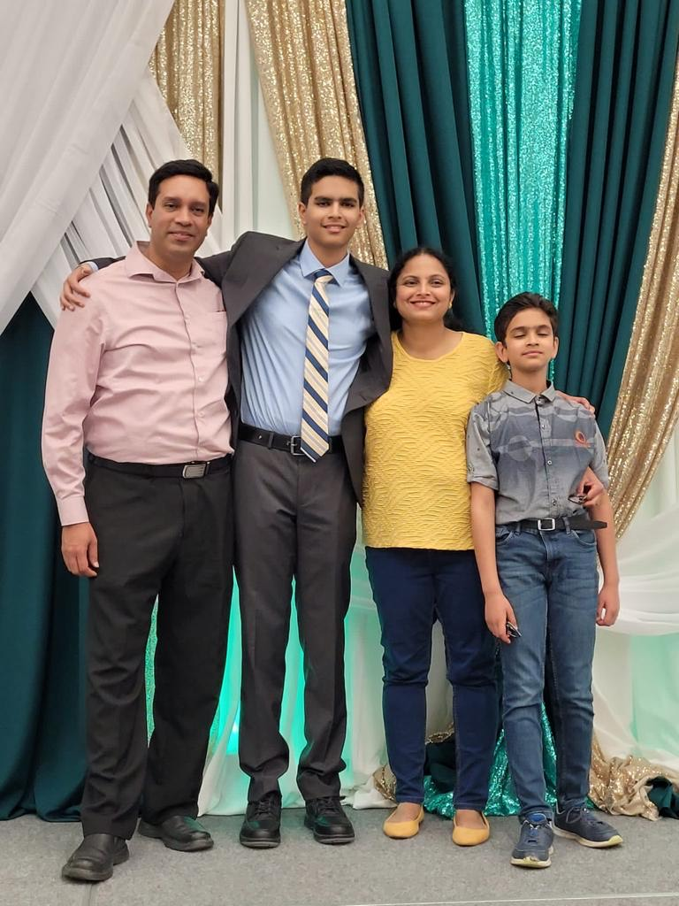
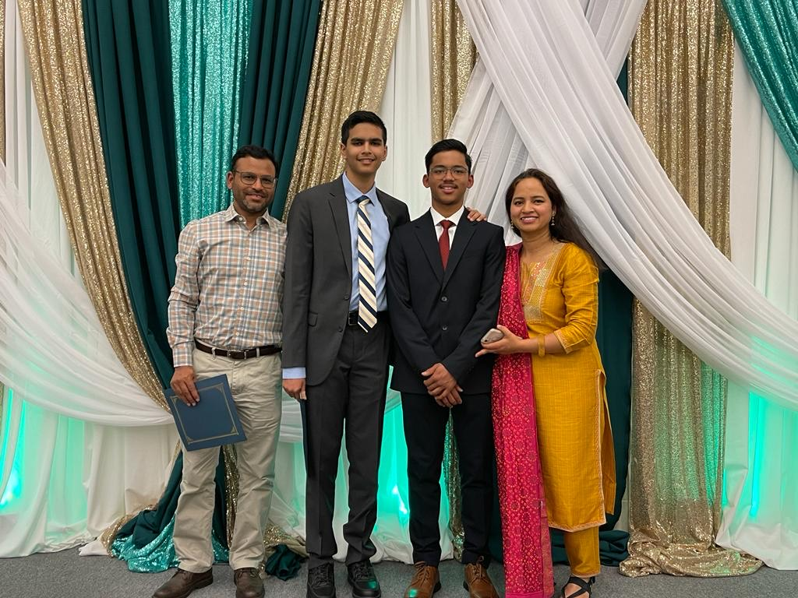

Today I will go over the 5 most treasured things in my life and why they matter to me.
 An image of me with my family.  An image of me with my friend's family.
Humans are social by nature. A life without family and friends is unimaginable. Your family and friends define who you are to an extent and you grow alongside them.

Chess is my favourite board game because it:
Chess requires no luck, and it is the best example of a game that is "easy to learn, hard to master." This means you need to put real effort into learning the game. You can't just keep playing and hope to get lucky.
Food is a neccassaity in life. It fuels our everyday activities, and gives us the nutrition we require to survive. Food can also provide comfort or evoke emotional responses due to our memories or current condition. Food can also be considered scrumptious depending on who you ask.
For WAY more information than you need... Check this out!
Those are the most important things about me that you should know. If you want to share your favourite things, you should know that I do not have social media. Sorry.